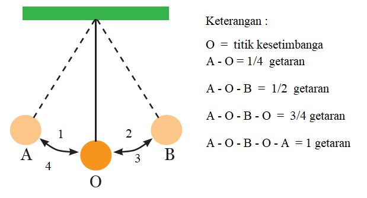
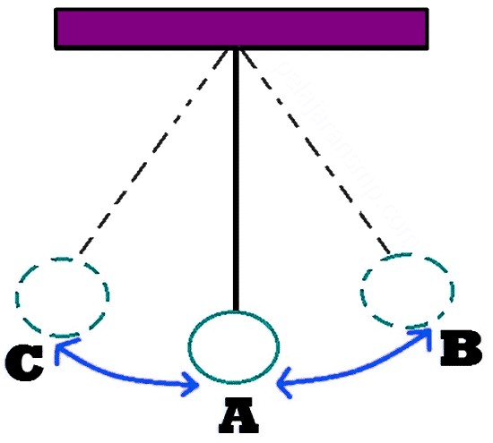

GETARAN DAN GELOMBANG
Pernahkah kalian memperhatikan ayunan? Bagaimana cara kerja ayunan? Apa yang terjadi jika ayunan diayunkan? Tahukah kamu bahwa ayunan merupakan contoh getaran dalam kehidupan sehari-hari? Lalu, Apa itu getaran? Getaran merupakan gerak bolak balik secara periodik melalui titik keseteimbangan, seperti halnya ayunan tersebut yang bergerak dari titik awal melalui titik keseimbangan dan menuju ke titik akhir, kemudian kembali lagi ke titik awal. Agar lebih jelas, simak materi setelah ini
Getaran
Getaran adalah gerak bolak-balik secara berkala melalui suatu titik keseimbangan. Pada umumnya setiap benda dapat melakukan getaran. Suatu benda dikatakan bergetar bila benda itu bergerak bolak-balik secara berkala melalui titik keseimbangan.
Sumber: https://images.app.goo.gl/TE34BA47ZD8PshSn7
Getaran adalah gerak bolak-balik disekitar titik setimbangan.
O = titik kesetimbangan.
Beberapa contoh getaran yang dapat kita jumpai dalam kehidupan sehari-hari adalah:
- Sinar gitar yang dipetik
- Bandul jam dinding yang sedang bergoyang
- Ayunan anak-anak yang sedang dimainkan
- Mistar plastik yang dijepit pada salah satu ujungnya, lalu ujung lainnya diberi simpangan dengan cara menariknya, kemudian dilepaskan tarikannya
- Pegas yang diberi beban
Perhatikan gambar berikut!
- Titik A merupakan titik keseimbangan
- Simpangan terbesar terjauh bandul (ditunjukkan dengan jarak AB=AC) disebut amplitudo getaran
- Jarak tempuh B-A-C-A-B
Amplitudo
Dalam gambar 2 telah disebutkan bahwa amplitudo adalah simpangan terbesar dihitung dari kedudukan keseimbangan. Amplitudo diberi simbol A, dengan satuan meter
Periode Getaran
Periode getaran adalah waktu yang digunakan dalam satu getaran dan diberi simbol T. Untuk gambar ayunan diatas, jika waktu yang diperlukan oleh bandul untuk bergetar dari B ke A, ke C, ke A, dan kembali ke B adalah 0,2 detik. Maka, periode getaran bandul tersebut 0,2 detik atau T= 0,2 detik= 0,2 sekon. Periode suatu getaran tidak bergantung pada amplitudo getaran
Frenkuensi getaran
Frenkuensi getaran adalah jumlah getaran yang dilakukan oleh sistem dalam satu detik, diberi simbol f. Untuk sistem ayunan bandul di atas, jika dalam waktu yang diperlukan oleh bandul untuk bergerak dari B ke A, A ke C, C ke A, dan ke B sama dengan 0,2 detik, maka :
- Dalam waktu 0,2 detik bandul menjalani satu getaran penuh
- Dalam waktu 1 detik bandul menjalani 5 kali getaran penuh
Dikatakan bahwa frekuensi getaran sistem bandul tersebut adalah 5 getaran/detik atau f = 5 Hz.
Hubungan antara Periode dan Frekuensi getaran
Dari definisi periode dan frekuensi getaran di atas, diperoleh hubungan:
| \[T=\frac{1}{f} \] \[f=\frac{1}{T} \] \[f=\frac{n}{t} \] |
|---|
Keterangan:
-
T = Periode, satuan detik atau sekon
f = frekuensi getaran, satuannya 1/detik atau Hz
Mari perhatikan penjelasan dan ilustrasi mengenai getaran dibawah ini!
Dalam satu menit terjadi 960 getaran pada suatu partikel. Tentukan periode getaran dan frekuensinya!
Diketahui
n = 960 getaran
t = 1 menit= 60 s
Penyelesaian
T = t/n
T = 60/960
T =0,0625 s
Jadi periode getarannya adalah 0,0625 s
f = n/t
f = 960/60
f = 16 Hz
Jadi frekuensi getarannya adalah 16 Hz
Gelombang
Gelombang adalah gejala rambatan dari suatu getaran/usikan. Gelombang akan terus terjadi apabila
sumber getaran ini bergetar terus menerus. Gelombang membawa energi dari satu tempat ke tempat
lainnya.
Contoh sederhana gelombang, apabila kita mengkaitkan satu ujung tali ke tiang, dan
satu
ujung talinya lagi digoyangkan, maka akan terbentuk banyak bukit dan lembah di tali yang
digoyangkan
tadi, inilah yang disebut gelombang.
Berdasarkan mediumnya gelombang dibagi dua, yaitu:
- Gelombang Mekanik
- Gelombang Elektromagnetik
Gelombang mekanik adalah gelombang yang dalam proses perambatannya memerlukan medium (zat perantara). Artinya jika tidak ada medium, maka gelombang tidak akan terjadi. Contohnya adalah gelombang bunyi yang zat perantaranya udara, jadi jika tidak ada udara bunyi tidak akan terdengar.
Gelombang elektromagnetik adalah gelombang yang dalam proses perambatannya tidak memerlukan medium (zat perantara). Artinya gelombang ini bisa merambat dalam keadaan bagaimanapun tanpa memerlukan medium. Contohnya adalah gelombang cahaya yang terus ada dan tidak memerlukan zat perantara.
Berdasarkan arah getar dan arah rambatnya, gelombang dibagi menjadi dua, yaitu:
- Gelombang transversal
- Getaran sinar gitar yang dipetik
- Getaran tali yang digoyang-goyangkan pada salah satu ujungnya.
- Gelombang Longitudinal
Gelombang transversal adalah gelombang yang arah getarannya tegak lurus dengan arah rambatannya. Bentuk getarannya berupa lembah dan bukit (dapat dilihat pada gambar dibawah).
Arah rambat diatas adalah ke kiri dan ke kanan, sedangkan arah getarnya adalah ke atas dan ke bawah. Jadi itulah yang dimaksud arah rambat tegak lurus degan arah getarnya.
Contoh gelombang transversal:
Gelombang longitudinal adalah gelombang yang arah rambatannya sejajar dengan arah getarannya. Bentuk getarannya berupa rapatan dan renggangan (dapat dilihat pada gambar di bawah).
Berdasarkan gambar kita ketahui bahwa:
Arah rambat gelombangnya ke kiri dan ke kanan, dan arah getaranya ke kiri dan ke kanan pula.
Oleh
karena itu gelombang ini adalah gelombang longitudinal yang arah getar dan arah rambatnya
sejajar.
Contoh gelombang ini adalah gelombang bunyi, di udara yang dirambati gelombang ini akan
terjadi
rapatan dan reganggan pada molekul-molekul ini juga bergetar. Akan tetapi getarannya hanya
sebatas
gerak maju mundur dan tetap di titik keseimbangan, sehingga tidak membentuk bukit dan
lembah.
Panjang dan Cepat Rambat Gelombang
Panjang Gelombang
Panjang satu gelombang sama dengan jarak yang ditempuh dalam waktu satu periode.
- Panjang gelombang dari gelombang transversal
- Panjang gelombang dari gelombang longitudinal Perhatikan ilustrasi berikut!
Pada gelombang transversal, satu gelombang terdiri atas 3 simpul dan 2 perut. Jarak antara dua simpul atau dua perut yang berurutan disebut setengah panjang gelombang atau ½ λ
Cepat Rambat Gelombang
Jarak yang ditempuh oleh gelombang dalam satu sekon disebut cepat rambat gelombang. Cepat rambat gelombang dilambangkan dengan v dan satuannya m/s. Hubungan antara v, f, λ, dan T adalah sebagai berikut:
Mari perhatikan ilustrasi mengenai gelombang dibawah ini:
Gelombang pada permukaan air merambat dengan panjang gelombang 2 m. jika waktu yang dibutuhkan
untuk
menempuh satu gelombang adalah 0,5 sekon, tentukan:
a. Cepat rambat gelombang, dan
b. frekuensi gelombang
Diketahui
Panjang gelombang = 2 m
Periode = 0,5 s
Penyelesaian
a. \[v=\frac{lambda}{T} \ = \frac{2m}{0,5s} \ = \ 4 m/s\]
Jadi, cepat rambat gelombang air adalah 4 m/s
b. \[f=\frac{1}{T} \ = \frac{1}{0,5s} \ = \ 2 Hz\]
Jadi, frekuensi gelombang air adalah 2 Hz
TUGAS
| Mata Pelajaran | : Ilmu Pengetahuan Alam |
| Guru | : Henny Indah Pratiwi |
| Kelas | : VIII |
| Semester | : II (dua) |
| Hari/Tanggal | : Sabtu, 11 Juni 2022 |
| Waktu | : 60 menit |
SOAL PILIHAN GANDA